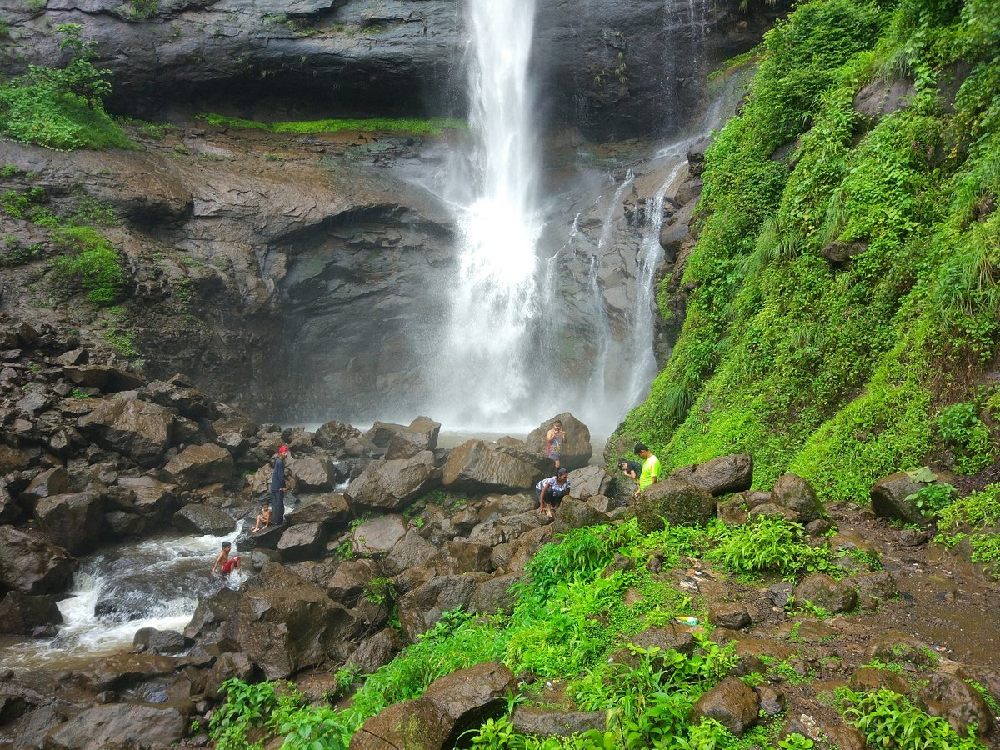
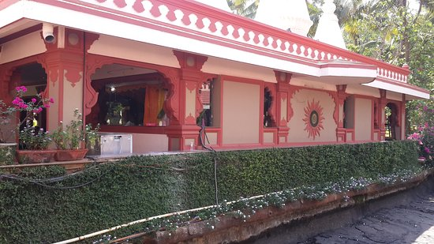
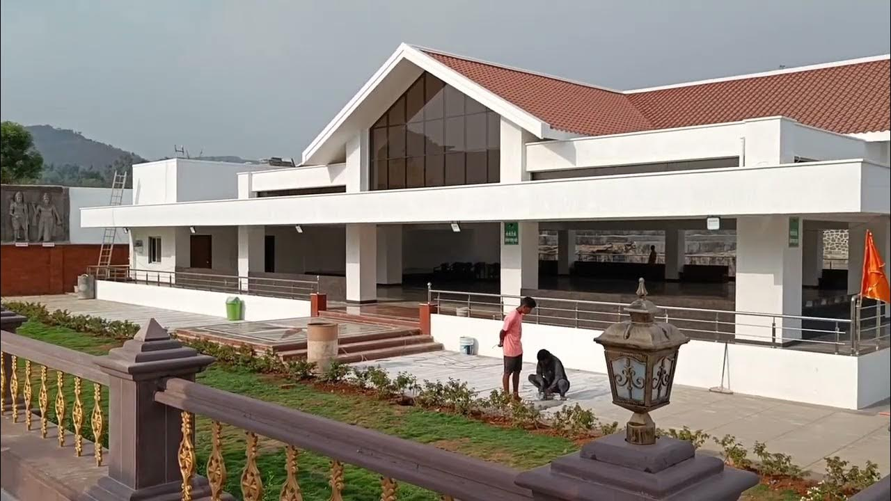
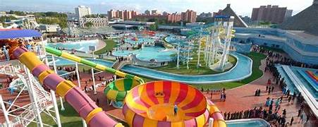

1. Zenith Waterfall
If you're visiting Khopoli during the rainy season, you must include Zenith Waterfall in your itinerary. Active from the month of July to September, this seasonal fall attracts tourists owing to its beautiful surroundings. It is around 80-90 ft. high and falls down in a curve due to the strong wind flow.
You can take a private vehicle from the concrete bridge near Khopoli railway station up to this fall or set on a 40 to 50-minute-long trek. The lush greenery, natural vistas, paddy fields and water streams you cross on the trekking trail will make this adventurous experience all the more memorable.
- Location:Khopoli
2.Gagangiri Ashram
As the name suggests, the Gagangiri Maharaj Ashram is a spiritual retreat, dedicated to the teachings of Gagangiri Maharaj. Found amidst the lush landscapes of Khopoli, the ashram provides a sanctuary for those seeking solace and inner peace.
The most important aspect of the ashram's environment is its simple architecture and natural beauty that encourages meditation and reflection. Additionally, the visitors here are invited to take part in the ashram's daily rituals and programs, with an attempt to foster a sense of community and spiritual well-being.
In a world where peace and silence are becoming increasingly rare, the ashram offers a much-needed break from the hassle, making it a great place to visit in Khopoli.
- Location:Khopoli
3. Shri Vireshwar Mahadev Temple
Shri Vireshwar Mahadev Temple in Khopoli was built by Nana Phadnavis, an influential statesman of the Maratha Empire. Dedicated to Lord Shiva, this 18th-century shrine is visited by a large number of Hindu devotees, especially at the time of Shivratri.
The beautiful lake located in front of the temple makes for a perfect place to retire amidst calmness and serenity. Once you have said your prayers at the temple, you can laze on the lakeside or indulge in exploring the intriguing history of the temple.
- Location:Varchi, Khopoli
4. Shri Varadvinayak Temple
Shri Varadvinayak Temple is frequented by a large number of devotees round the year since it is one of the much-revered Ashtavinayak temples in Maharashtra. Each of the eight Ganesha shrines in the Ashtavinayak circuit houses a distinct murti of the deity, the one installed here being east-facing with his trunk turned to the left. It is a swayambhu, found in 1690 AD immersed in an adjoining lake.
Built in 1725 AD by Ramji Mahadev Biwalkar – a Peshwa General, Shri Varadvinayak Temple has idols of Mushika, the Navagraha Devtas and also a Shivalinga. There are four elephant figures on the sides of the temple and an oil lamp inside it that is believed to have been burning continuously since 1892. You can pay homage to the God at the Garbagriha and later head to the pond on the premises.
- Location:Village Mahad, Taluka Khalapur
5. Panchayatan Temple
Here Informotion......
Here Informotion......
- Location:Khopoli
6. Imagica, Khopoli
Imagicaa stands as one of the most sought-after places to visit in Khopoli, drawing families and thrill-seekers from across the state. This wonderful theme park, with its range of exciting rides catering to all age groups, ensures a day packed with joy and excitement.
From the dizzying spins of roller coasters to the charming attractions designed for the little ones, Imagicaa promises an unforgettable adventure for everyone.
Apart from its rides, Imagicaa also captivates its visitors with live entertainment and thematic festivities that bring stories to life. This among the park's many other attractions is what makes it a cornerstone among the places to visit in Khopoli.
- Location:Khopoli
s e r v i c e s
food and drinks
by Railway
safty guide
advanture
g a l l e r y

Zenith Waterfall

Gagangiri Ashram
vireshwar Temple

Shri Varadvinayak Temple

Panchayatan Temple

Imagica WaterPark
r e v i e w